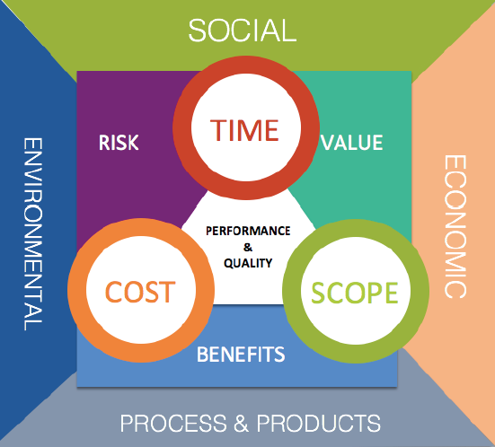

Nachhaltigkeit im Projektmanagement
Léon Kreutz
Manuel
Thorben Golfmann
Inhalt
- Was bedeutet Nachhaltigkeit?
- Nachhaltigkeit in projektorientierten Unternehmen
- Nachhaltigkeit in Projektmanagement
Entstehung des Begriffes Nachhaltigkeit
- Scheinbar niemals endender Wachstums-und Fortschrittsoptimismus
- Keine Rücksicht auf Ressourcenverschwendung und Umweltverschmutzung
- Erstmals in den 80er Jahren von Bedeutung
Frage an euch:
Was bedeutet Nachhaltigkeit?
„Humanity has the ability to make development sustainable – to ensure that it meets the needs of the present without compromising the ability of future generations to meet their own needs."
-Definition des Brundtland-Berichtes von 1987, Gro Harlem Brundtland
„[...] nicht Gewinne zu erwirt-schaften, die dann in Umwelt- und Sozialprojekte fließen, sondern Gewinne bereits umwelt- und sozialverträglich zu erwirtschaften."
-Pufé (2014)
- „Das Niveau der Abbaurate erneuerbarer Ressourcen darf ihre Regenerationsrate nicht übersteigen.
- Das Niveau der Emissionen darf nicht höher liegen als die Assimilationskapazität der betroffenen Ökosysteme.
- Der Verbrauch nicht regenerierbarer Ressourcen muss durch eine entsprechende Erhöhung des Bestandes an regenerierbaren Ressourcen kompensiert werden.“
-Herman Daly
- Sehr unterschiedliche Definitionen und Erklärungsversuche
- In unterschiedlichen Ansätzen verschiedene Themenschwerpunkte stärker oder schwächer behandelt
- Alle gemeinsam: Eine bedachte Nutzung und Verwendung von natürlichen Beständen

Ökologie
- Umweltschutz und der Schutz von natürlichen Ressourcen
- Erhaltung der biologischen Vielfalt
- Begrenzung von Risiko und Emission
- Senkung des Energieverbrauchs
Ökonomie
- Wirtschaftswachstum
- Wirtschaftlicher Wettbewerb
- Effizientes Wirtschaftssystem
- Stabilität der weltweiten Wirtschaft
Soziales
- Soziale Gerechtigkeit
- Gesundheit
- Menschenrechte
- Sicherheit
- Chancengleichheit
- Bildung
Nachhaltigkeit in projektorientierten Unternehmen
- wichtiger Bestandteil für den Erfolg eines Unternehmens
- soziale, ökologische und finanzielle Vorteile
- z.B. Kosteneinsparungen, Konkurrenzvorteile
- nachhaltige Waren und Dienstleistungen sind schnell wachsende Märkte
P5- Standard
Grundlagen für die Integration
- Integration muss Ziel der Organisation sein
- Nachhaltigkeitsziele müssen genauso definiert werden wie traditionelle Ziele
- Zeit für die Integration
Vorteile durch Nachhaltigkeit
- Kostensenkungspotenziale
- Mitarbeitermotivation
- Reputationsaufbau
- Sicherung von Marktanteilen
Messmethoden für Nachhaltigkeit
- Benötigt für die Außenwirkung
- Intern für die Bewertung der Ziele
Vielen Dank für eure Aufmerksamkeit
Quellen: Nachhaltigkeit im Projektmanagement, Ramona Wolfgang 2018
https://ibu-epd.com/wp-content/uploads/2016/03/3S%C3%A4ulen.png